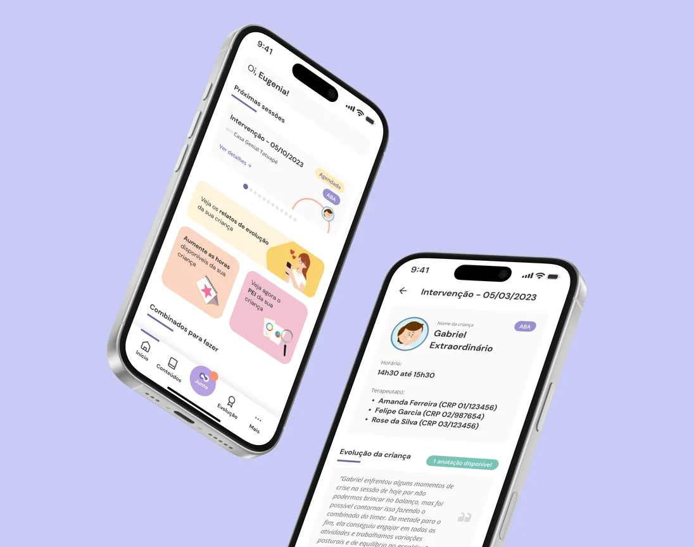
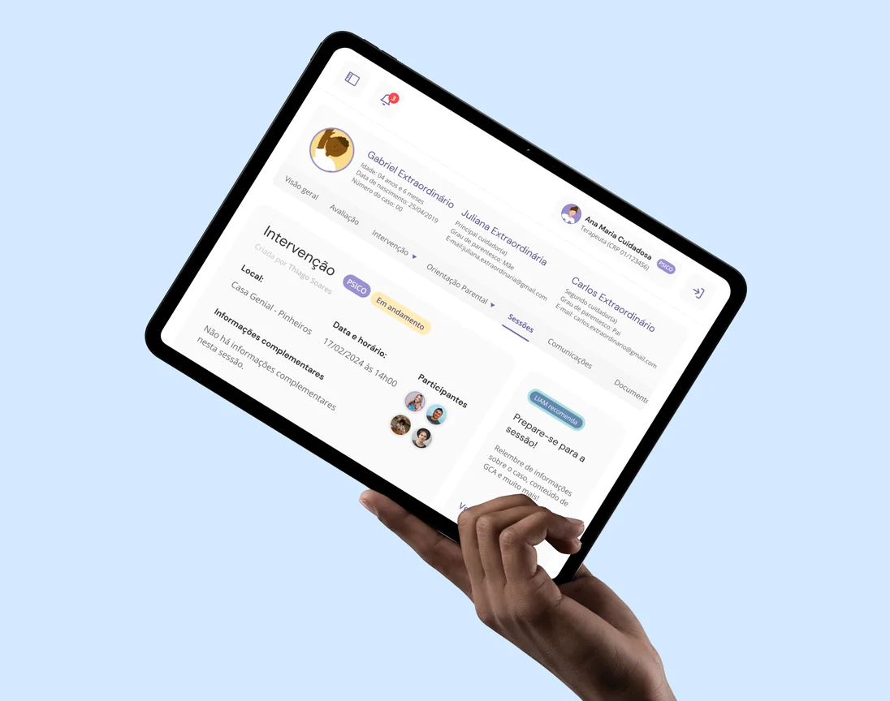
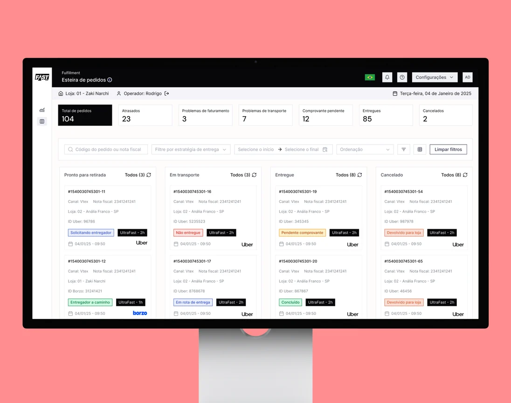
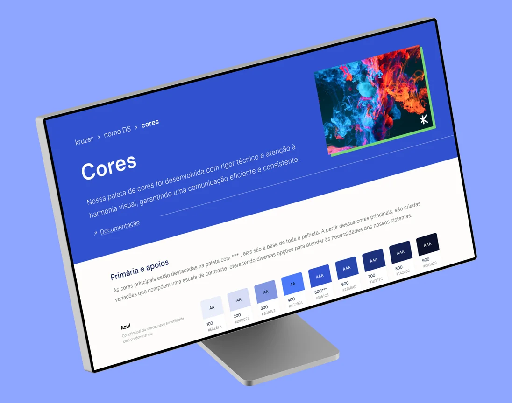
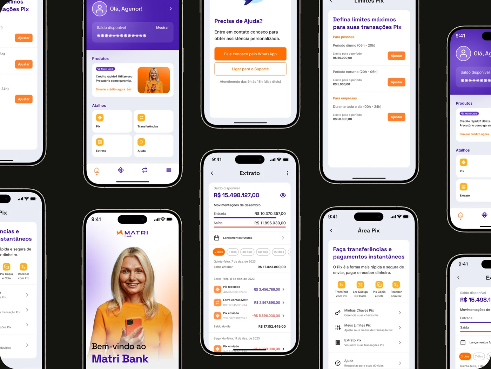
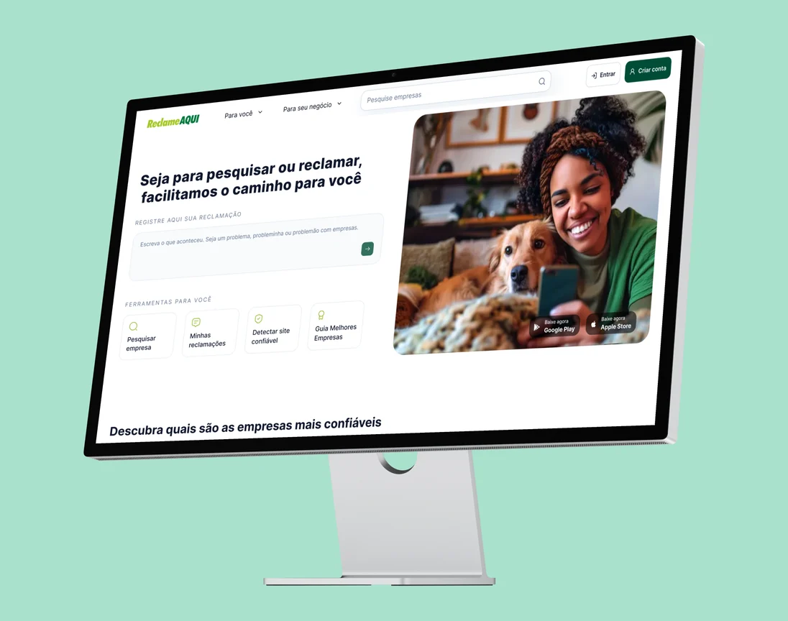

Product design for systems where the wrong screen is expensive.
I design the tools clinicians, operators and families use to decide fast when the stakes are real. Six-plus years in product design; today on a platform used by 20M+ people a month.
Open to Senior and Lead product design roles in the US · Authorized to work in the US
Four products where the failure states mattered more than the demo.
Healthcare, logistics and fintech. Same job every time: find the real constraint, name the number that could veto the win, design the exceptions first.

Genial App
Fixed scheduling, not content. A one-month MVP, then a year of small bets.

LIAM
Drafts the clinical record from the therapist's narration. Never signs it.

Pick & Pack
One order, three people, one screen each. Designed around the exceptions.

Compass
Twenty blues in production to one semantic token layer, with governance.

Matri Bank
Redesigned the credit journey for a regulated product. Full case on request.

Compra Confiável Now
Senior Product Designer on the product 20M+ people use to check a company before buying. Under NDA.
The instrument is chosen, not inherited.
A decision doesn't reach production until something outside my own taste has argued for it. What changes is which evidence is the cheapest that could still prove me wrong.
- Genial AppA weekly behaviour curve with release markers. Hundreds of families, so an A/B test would have bought comfort at the price of learning speed.
- LIAMEvery therapist on staff, reading drafts out loud. The risk was clinical trust, and a funnel can't see who stops trusting but keeps clicking.
- Pick & PackA store that went first. You can't split traffic in a warehouse, and the operation already records what it does.
- CompassThe engineering team's own tracker. A metric I invent to prove my own project is worth nothing in a review.
Words from people I've built with.
As his design manager at Genial Care, I watched Guilherme's work grow increasingly strategic, always aligned to product and business goals, with a high bar for quality.
Guilherme has a sharp critical and creative eye, and a real commitment to what he ships. Watching him work live in Figma was mesmerizing, the speed of his vision and execution.
Working with Canna was incredible. He has an exceptional ability to translate user pain into effective solutions, backing the team with concrete deliverables at every step.
I came to design through the machine room: enterprise support, then front-end development, before my first screen. UX is where I found the work I wanted, and I went at it deliberately — two postgraduate specialisations, then product, strategy and business. The origin still shows: I read the API before the wireframe, ask what the backend does past the cutoff, and stay in the squad through release.
I have been the first or only designer more often than not: first Senior Product Designer at Genial Care, later leading design across two teams; sole designer for four products at Kruzer; now on Reclame Aqui's consumer-trust platform.
I use LLMs and agents daily for research and for pressure-testing concepts before they cost engineering time, and I ship experiments with Claude Code, this site among them.
- 2026 –
- Senior Product Designer · Reclame Aqui · consumer trust, 20M+ monthly users
- 2024 – 26
- Senior Product Designer · Kruzer · enterprise logistics platform for Fast Shop, sole designer for four products
- 2022 – 24
- Senior Product Designer · Genial Care · first designer, then leading design across two teams
- before 2022
- Product Designer · Shock Tecnologia · white-label banking (Matri)
- five years
- 7COMm · support intern to Senior UX/UI Designer, by way of front-end